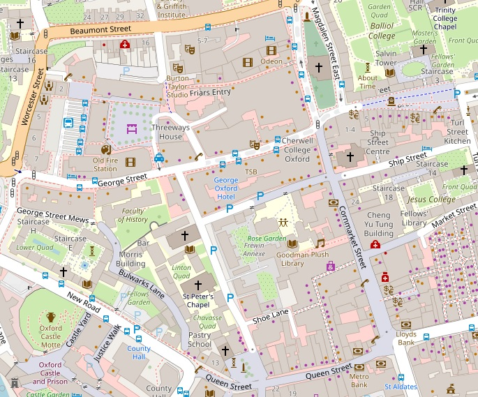
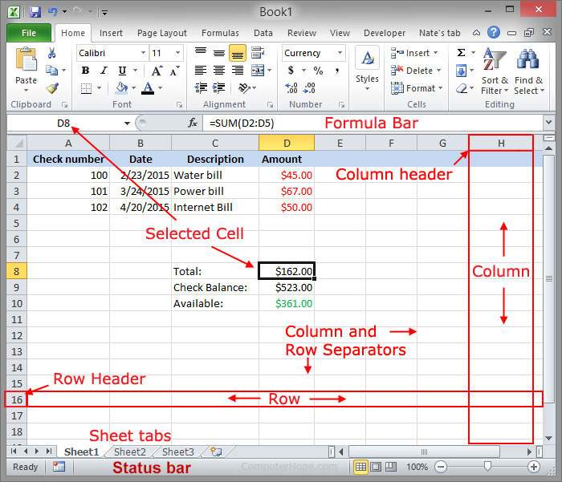
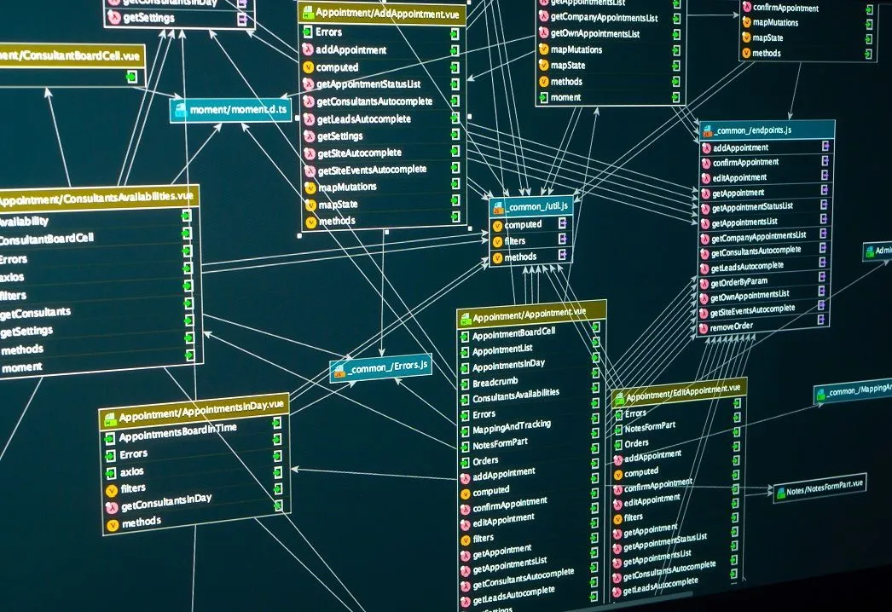
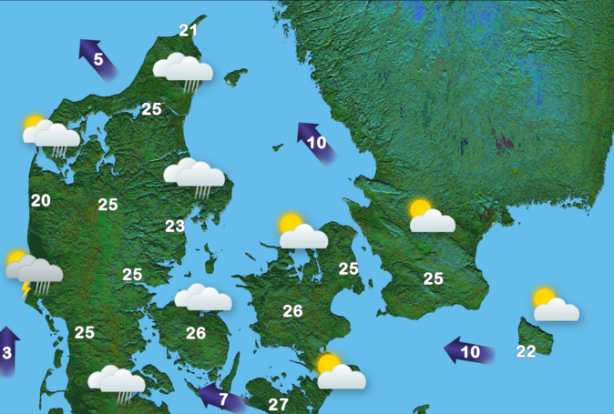
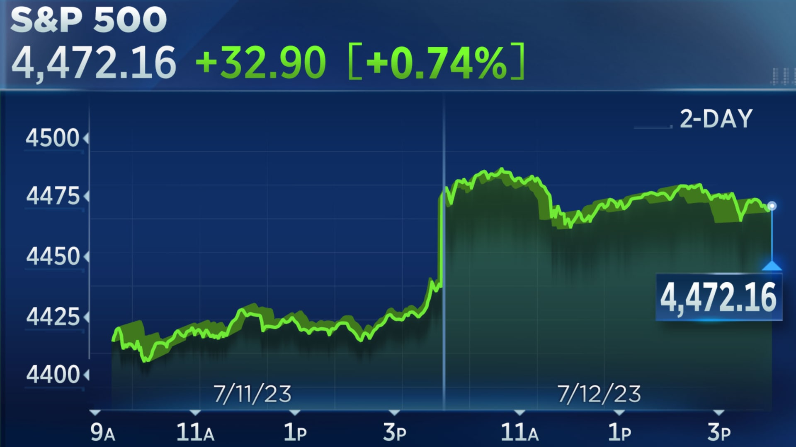

Creative Programming: Data Sources
Lecture 8
(Re)visiting slides?
You can jump to any slide with the menu to the (bottom) left.
Did you miss a slide or want to revisit? Open the narration tab while studying to get an explanation of difficult slides.

Data in our world
Data in our world

Why data?
- Data helps us build projects that react to real information
- We can move from “hard-coded sketches” to “data-driven sketches”
- This is useful for art, games, visual journalism, installations, and project work
- NOTE: using data sources is not required for the final project!
Tables (CSV)
Tabular data


What is a table?
- A table stores data in rows and columns
- Rows represent data for a single thing
- Columns represent attributes of those things
- Great for structured data such as measurements, logs, survey responses
Excel
- Excel shows tables visually
- This is a way to communicate the data to humans
- but our sketches need a structured format for machines to read
Tabular data formats
- (Optionally) start with the column names (headers)
- and then one line per row of data
- Columns are separated by a delimiter
CSV= comma-separated valuesTSV= tab-separated values
CSV example
- In CSV files, values are separated by commas
loadTable(filename, "csv", "header")can load these into p5.js
- CSV is very common but can be hard to read
TSV example
- In TSV files, values are separated by tabs
loadTable(filename, "tsv", "header")can load these into p5.js
- Other delimiters exist too, but CSV and TSV are most common
CSV in p5.js
- Load CSV files with
loadTable() - As we are working with files, we need to do this in
preload() - Remember to put your CSV files in your sketch folder
- Use
"header"when your first row contains column names - Then we can loop through rows and read values per column
Accessing tabular data
.getRowCount()gives us the number of rows- We can access rows by index:
table.getRow(0)- And we can get column values by name:
row.get("age") - This gives us a way to read structured data into our sketch
- And we can get column values by name:
- Alternatively, you can get an array of a column with
table.getColumn("age")- And then loop through that array of values
CSV example
- Here we load a CSV and access its values
- Tip: use
join(", ")to print arrays nicely (with commas inbetween)
Unstructured access
- We can also access values by row and column index:
table.get(0, 1)
Filtering rows
- In real projects, we rarely use all rows at once; we filter
- Filtering is conditional logic inside a loop
- Alternatively, use
table.findRows(value, column)to get matching rows
Mapping table values to visuals
- Data values can drive size, position, and color
- This is where data starts feeling visual and expressive
- Always start simple: one variable -> one visual property
CSV challenge
Class Assignment: Denmark On The Map
- Copy the sketch code below, and download the data from SimpleMaps
- Load the CSV data (
preload()) and inspect it (e.g. console.log) - Draw a simple shape for each city on the map. It’s tricky to convert the coordinates to the map!
- Can you visualise the population as well?
JSON
Returning to objects
- Last lecture we used objects to structure our code and data
- Objects are a fundamental way to group related data and behavior
- What if we want a lot of objects?
- A seperate data file can help us manage that complexity
JSON
- JavaScript Object Notation (JSON) stores objects and arrays in text
- CSV is great for flat tables
- JSON is better for nested structures and mixed data
- JSON is very common in web apps and APIs
JSON building blocks
- Objects: key-value pairs (
{ ... }) - Arrays: ordered lists (
[ ... ])- This mimics how we’ve been writing these two in code!
- JSON combines these to create complex data structures
JSON in action
- We can load JSON files with
loadJSON()(inpreload()) - Remember to put your JSON files in your sketch folder
Nested JSON values
- Nested fields let us store grouped information cleanly
- Access pattern example:
project.metrics.wow
Filtering JSON arrays
- JSON arrays are arrays, so we can loop through them
- As seen last week, either use
fororforEach array.includes(value)checks whether an array contains a value
APIs
What is an API?
- Application Programming Interface (API)
- A way to request data from another service
- Instead of static local files, we can fetch live data
- The response is often JSON
- We’ve seen this before; we used URLs for images and sounds
API examples
- Weather data, news headlines, stock prices, social media posts


API request flow
- We can often use APIs the same as json
loadJSON()can fetch from a URL- Sometimes, APIs are more complex and consist of multiple steps
- For example, you may need to load multiple JSON endpoints
First API example
- Here we load some weather data from a public API
API interaction
- We can request new data on click or key press
- This allows dynamic, changing sketches
- User action + data request can become part of the design
- Problem: how can we do this outside of
preload()?
Callbacks
- Want to use APIs outside of
preload()? Use callbacks! - Similar syntax to
forEach - In this case, run a piece of code when successful, or on error
Cats!
- In this example, we fetch a random cat fact on click
- Tip: use
textWrap(WORD)to make long text fit better
API assignment
Class Assignment: Weather Alert!
- Open your Denmark sketch back up (from class assignment 1)
- Alternatively, use the base map sketch without the CSV data
- Use the open meteo website to craft a weather API request for one of the cities
- Display the weather data for that city on the map
- Can you make the URL dynamic so that you can display the weather for different cities when pressing a button?
Excellent APIs: Art
- Both the Art Institute of Chicago and Statens Museum for Kunst have well-documented APIs with lots of data and images to explore
Excellent APIs: Dogs
- The Dog API is a fun and simple API that provides random dog images and breed information.
Excellent APIs: Questions
- Genderize, Agify, and Nationalize predict on names
- These APIs require input!
Summary
- CSV: best for flat table-like datasets
- JSON: best for nested and flexible structures
- APIs: best for live and external data

Creative Programming 2026 Lecture 8 - Ties Robroek - IT University of Copenhagen